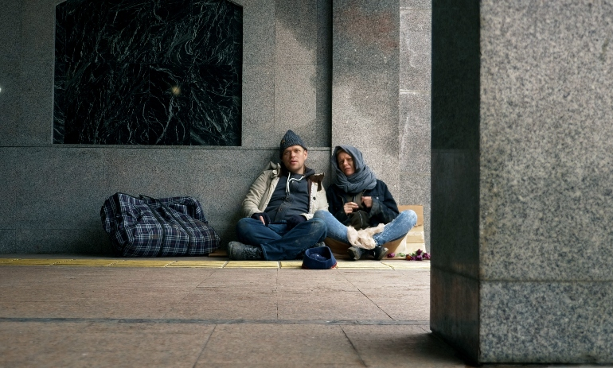
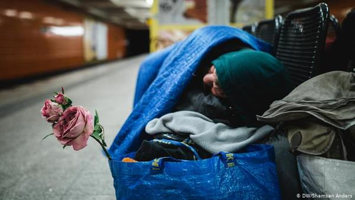
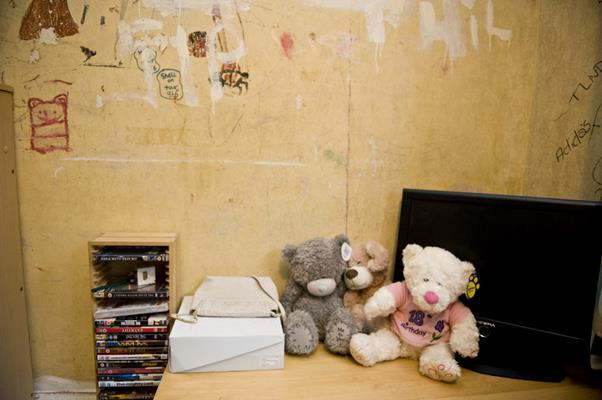
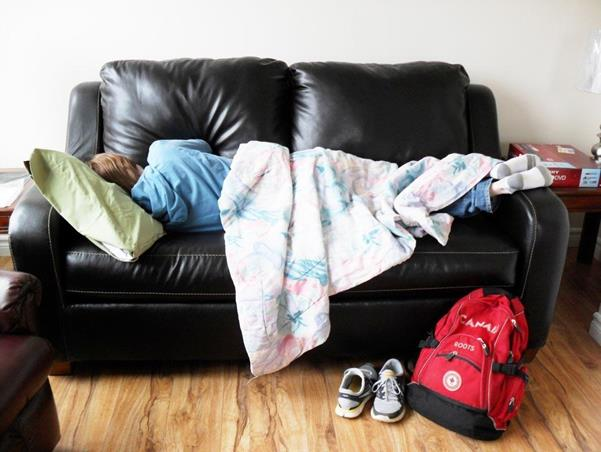
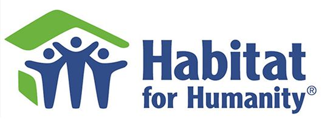

Basic information about homelessness
Statistics
There are not many statistics about homeless people. In England there were over 219,000 homeless people in 2019. In 2016, 1 in 1,670 Americans were experiencing homelessness. Homeless people face many more challanges in life when compared to people with adequate housing conditions. For example they are 17 times more likely to be victims of violence. They are also 9 times more likely to take their own life. People who are homeless usually die in their 40s-on average 45 for men and 43 for women.
Types of Homelessness
Rough Sleeping
Rough sleeping is when a homeless person has to sleep outside on the streets. This is the most well known and most dangerous form of homelessness. When you think of homelessness, rough sleeping is usually what you would think of. People who rough sleep tend to face severe forms of trauma, mental health and drug issues the longer they rough sleep.
Statutory Homelessness
Statutory homelessness is a state of homelessness in which the person is protected by the authorities and they secure a home for them. However, to be registered for this care you have to meet several criteria. People who meet these criteria will be provided with accommodations - for example families with children.
Hidden Homelessness
Hidden homelessness is when the person in question does not contact the authorities about their situation. This makes them unable to get certain potential help from the government. Many of these people sleep in hotels, squats, b&bs or in the homes of friends or family.
At Risk of Homelessness
These people are people who have a higher chance of becoming homeless. There are many people at risk of becoming homeless due to reasons such as job loss or low pay. It is important that we help these individuals. Afterall, that might be us in a few years and when we would experience it we would want others to help us.
How do People Become Homeless?
Most often the reasons for becoming homeless are out of control for the individual. (Tier 4 ‘a devastating blow’ for Big Issue sellers on the biggest week of the year) There are many things that can push someone into homelessness. These can be personal problems but also social problems.
Social
Social causes are caused by society, and social issues. These include lack of affordable housing, severe poverty, unemployment, lack of qualifications, family background issues or previous experience of homelessness in the family. (Tier 4 ‘a devastating blow’ for Big Issue sellers on biggest week of the year)
Other
Other problems that lead someone to homelessness are leaving somewhere and not having a place to return to to for example the army, prison, care, the hospital or leaving a violent/abusive relationship - usually for women. Another reason for someone to be homeless is simply not being able to afford rent. People also become homeless due to big life events. These include breaking down relationships, losing a job or health problems which can be physical and or mental. However, in almost all cases homelessness can be prevented.
To learn more about the reasons for homelessness please visit: Tier 4 ‘a devastating blow’ for Big Issue sellers on biggest week of the year
Interviews
Jill Cowan and Marie Tae McDermott conducted an interview with homeless people to find out why these people are homeless. They got dozens of responses. A lot of the responses referred to injury, job loss, domestic violence, mental illness and addiction.
In a 2019 survey 26 percent of the interviewees stated that job loss was the primary cause of their homelessness. 18 percent stated that it was drugs or alcohol, 13 percent stated that it was eviction and 8 percent stated that the primary cause of their homelessness was by their mental illness.
Many African Americans are often pushed into homelessness because of institutionalized racism. This causes many African Americans to be homeless due to something that is out of their control.
To learn more about this survey as well as read stories from people who have experienced homelessness, visit: Why Do People Become Homeless? - The New York Times (nytimes.com)
Practical Ways You Can Help the Homeless
There are a lot of ways to help people without a home. The most common one is to give them money on the streets. But is this really the best option? What can we do instead?
Care Packages
A care package is a very useful thing for homeless people. In the care package you can include anything. Food, clothes or other useful items such as hand wipes, deodorant, socks etc. Because care packages can be very useful, we made a section on how to make the care package.
Educate Yourself
There are plenty of reasons why people become homeless. For example, lack of affordable housing, loss of employment, divorce, illness, substance abuse, domestic abuse and more. This can be a first step towards helping the homeless people. You should educate yourself why people become homeless. Because if you want to help you need to know the possibilities of how they got into this position.
Teach
When you educate yourself enough you can organize classes with people experiencing homelessness through your local shelter to teach typing, accounting, plumbing, carpentry, child care, nutrition or even a new language. Those skills can help a homeless person find work in the future.
Donate
Donating means a lot to the homeless people, you can donate clothes, shoes, food and many other items. People experiencing homelessness will appreciate this help. Some shelters may have a problem with not having enough food to feed everyone. Additionally, when it is cold during the winter season people experiencing homelessness will be so thankful for warm clothes, blankets, that can keep them warm. Donate new or gently used clothes. We need to show them some respect too. So, shelters will appreciate personal hygiene on clothing items and socks.
Volunteer
Another good thing you can do is to sign up to work at your local homeless shelter. It can be an evening shift or a shift during the Christmas holidays. Where you answer phones, sort mail, serve food, wash dishes, distribute clothes, babysit kids, clean floors, or fix things that are not working.
Seek For Job Opportunities
This may be one of the most beneficial options, because you help people experiencing homelessness integrate back
into society. As many people experiencing homelessness cannot find regular employment.
So, energize your church or community center to enlist a homeless person to paint, clean, type, answer
telephones etc. It does not necessarily need to be in a church or a community center, you can help
people
experiencing homelessness find any type of job that they will be able to do.
It might also be beneficial
if you help a homeless person obtain pesonal documents such as an ID card,
since many homeless people lack important documents. This prevents them from being able to apply for a job position
or recieve proper medical attention.
The Impact of COVID-19 on the Homeless
Homeless people should be our priority because they are at a
bigger risk of getting infected by COVID-19 and need our help
during these difficult times. People experiencing homelessness
may be at bigger risk for getting infected by COVID-19. This
causes the fact that they live outside. The absence of accommodation
has a bad effect on the results of physical and mental health, in connection
with the transmission and spread of COVID-19. Coronavirus the dangers related
with living outside or in a camp setting are
not the same as from remaining inside, for example, a crisis
cover or other assembled living office.
Outdoor life can allow individuals to increase the real distance among
themselves as well as between other people. In any case, when regularly
being outisde does not provide climate insurance, sufficient access to
offices for cleanliness and sterilization, or contact with the administration
and medical services. The balance of danger to the homeless should be taken
into account for any individual who encounters untouched ‘vagrancy‘.
When very first cases of coronavirus arrived then new cases of homelessness have been reported.
An expansion in homelessness has been distinguished, they will also require comfort due to the
state of emergency. Problems such as homelessness of young people, increased frequency of ill-
treatment of domestic people, release from the clinic and release from prison are likely to prove
more complicated. It is
equally important for the exclusion of individuals who have recently become poor as a result of
COVID-19.
The situation with the newest virus ‘COVID-19‘ is getting worse.
Homeless people need our help. They are in the biggest danger.
We should act with more kindness, respect and compassion
towards the homeless people. Keep in mind that there are many
Practical Ways You Can Help the Homeless.
Charities and Donations
Another form of helping can come in the form of donating to charities or shelters which work with the homeless. If you don’t have the resources to help the homeless personally, you can consider supporting the organizations below. You can support these charities in multiple forms, whether in the form of volunteering, donating (items or finances) or by spreading awareness on the homelessness crisis. You can also help by donating or volunteering at your local homeless shelter.
Caritas
Caritas is a organization of the Catholic church which helps people in extremely vulnerable situations all over the world.
To learn more about their work go to their website
Habitat for humanity
Habitat for Humanity is an international non-profit housing organization. It works with local communities and helps build and improve homes of people who need a proper and affordable place to live in.
To learn more about their work go to their website
Feantsa
It is the federation of European organizations which help and work with the homeless. They participate in numerous campaigns and projects and work towards ending homelessness and creating more policies which would protect the homeless.
To learn more about their work go to their website
What should you include in a care package
Care packages or care kits as they are also known are a very simple and easily achievable form of helping the homeless in your community. Acts of kindness can make a large impact on a person in need and remember you do not have to do everything alone, you can involve your co-workers, friends, classmates, and family to help you create these small acts of kindness.
When packing a care kit, pack all items in a reusable easy to carry bags, backpacks, or a zip lock bags so that they can be easily stored since homeless men and women often do not have resources to store these products.
After you finish packaging these care kits you can deliver them to your local homeless shelter, local volunteer group or organization that helps the homeless or you can distribute them personally to people in need. If you do not have resources to create gift packages you can also donate these items to your local shelter or organization which works with the homeless.
What Should You Include in a Care Package?
Toiletries:
• First aid kit
• Band-Aids
• Tissues/wet wipes
• Toothbrush and toothpaste
• Nail clippers
• Feminine hygienic products
• Comb or small hairbrush
• Deodorant
• Shampoo
• Hand sanitizer
• Lip balm
Other useful items to include are:
• Gift cards to grocery shop or drudgeries or drugstore
• Socks
• Masks
• Hand sanitizer
• Gloves
• New T-shirt
• Flashlight
• Can opener
Food:
• Granola bar or cereal bar
• Crackers, trail mix or nuts
• Beef jerky
• Juice boxes
• Dried fruit
• Cookies
• Canned soup
Avoid food items that can easily spoil or melt.
About Us
Our team of creators of this website consists of : Nina Barabásová, Noemi Lindbloom and Hana Petrovská.
We started this project in order to spread awareness and help with the homelessness crisis. Thankfully we were given this opportunity within the Community Project that our school - Spojená Škola Novohradská participates in. The Community Project is a crucial part of the MYP international programme and is focused on students realizing their goals, taking action and helping their community.
As a part of our Community Project, we also created:
• A Survey
• A Presentation
• A Pamphlet
Sources
“About Homelessness: Crisis UK.” Crisis, www.crisis.org.uk/ending-homelessness/about-homelessness/. Accessed 12th December 2020.
Cowan, Jill, and Marie Tae Mcdermott. “How Do People Become Homeless?” The New York Times, January 22nd 2020, https://www.nytimes.com/2020/01/22/us/california-homeless-people-stories.html. Accessed 12th December 2020.
“How to Make Homeless Care Kits That ACTUALLY Help » All Gifts.” All Gifts Considered, April 12th 2018, https://allgiftsconsidered.com/how-to-make-homeless-care-kits-that-actually-help/. Accessed December 12th 2020.
“How to Put Together a Care Package for the Homeless.” Fred Victor, January 7th 2020, https://www.fredvictor.org/2020/01/07/how-to-put-together-a-care-package-for-the-homeless/. Accessed December 12th 2020.
Ortiz-Ospina, Esteban, and Max Roser. “Homelessness.” Our World in Data, February 16th 2017, https://ourworldindata.org/homelessness. Accessed December 12th 2020.
“People Experiencing Homelessness.” Centers for Disease Control and Prevention, https://www.cdc.gov/coronavirus/2019-ncov/community/homeless-shelters/unsheltered-homelessness.html. Accessed December 16th 2020.
”7 Practical Ways You Can Help People Experiencing Homelessness.” therighttoshower, January 20th 2019, https://www.therighttoshower.com/make-difference/7-practical-ways-you-can-help-the-homeless. Accessed December 15th 2020.
“The Impact of COVID-19 on Homelessness.” City REDI Blog, https://blog.bham.ac.uk/cityredi/the-impact-of-covid-19-on-homelessness/ .Accessed December 15th 2020.
“Tier 4 'a Devastating Blow' for Big Issue Sellers on Biggest Week of the Year.” The Big Issue, December 21st 2020, https://www.bigissue.com/latest/tier-4-a-devastating-blow-for-big-issue-sellers-on-biggest-week-of-the-year/. Accessed 15th December 2020.
”9 Ways You Can Help the Homeless.” Treehugger, https://www.treehugger.com/ways-you-can-help-the-homeless-4868830. Accessed 15th December 2020